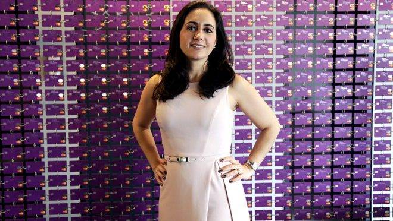

Cristina Junqueira
Cristina Junqueira, nascida em Ribeirão Preto, no interior de São Paulo, em 1984. Estudou no tradicional colégio jesuíta Santo Inácio, localizado no bairro de Botafogo e tão logo se formou no Ensino Médio, se mudou sozinha para São Paulo para cursar Engenharia de Produção na USP (Universidade de São Paulo), uma das mais conceituadas universidade do país. Cristina se formou em 2004 e emendou a graduação em um mestrado em Engenharia, na Escola Politécnica da USP.
"Sem autoconhecimento, como é que você vai ser autêntico? ".
Sua História
Cristina Junqueira é uma engenheira e empresária brasileira. É uma das fundadoras da fintech Nubank, atual CEO junto com os seus sócios Vagner S. Teves Jr. e Edward Wible. Em 2021, ela se tornou a segunda mulher mais rica do país, conformo ranking mundial da revista Forbes, atrás apenas de Luiza Trajano, dona da varejista Magazine Luiza. Com apenas 35 anos, ela é a única sócia brasileira e mulher da emissora de cartões que vem sacudindo o mercado, em sintonia com a era digital.
Hoje ela dedica boa parte de seu tempo para disseminar os conteúdos afirmativos de sua trajetória pessoal e profissional, de modo a também desafiar outro modelos que um(a) presidente de uma grande companhia do mercado financeiro e de ações possui.